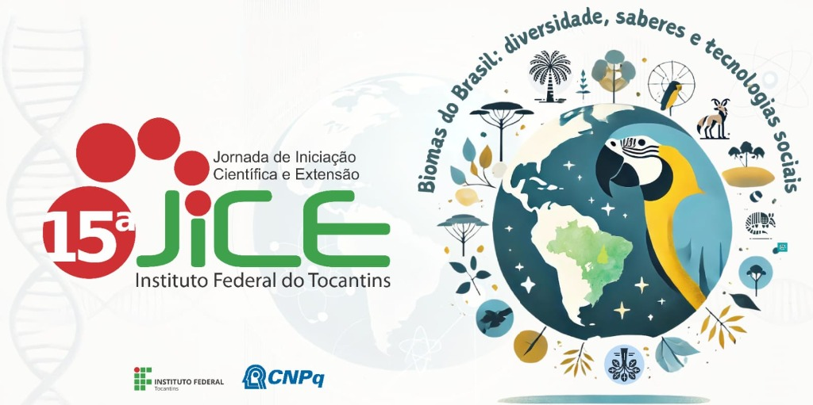
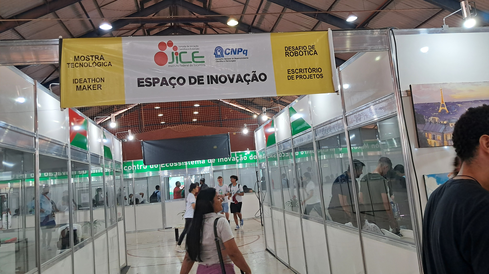

O Identidade IFTO 2024 (Jornada de Iniciação Científica e Extensão)
é um evento que apresenta os serviços do Instituto Federal do Tocantins,
com a integração dos trabalhos desenvolvidos na pesquisa, extensão, inovação,
arte e cultura, diversidade e ensino, assistência estudantil, desafios científicos,
rotinas administrativas e gestão de pessoas, bem como reforça a imagem do Instituto Federal
junto à comunidade tocantinense. O evento reúne, em um só lugar, a 15ª edição da Jornada de Iniciação
Científica e Extensão (Jice), a 11ª edição do Festival de Talentos Estudantis (Festival),
a 6ª edição do Afro Identidade e a 6ª edição do Integra IFTO.

Sobre o Desafio
O Desafio de Robótica é caracterizado como um espaço destinado à competição de caráter educacional de robôs autônomos, construídos por servidores e estudantes entusiastas da cultura maker no IFTO, os quais atuam no cumprimento de determinadas tarefas específicas organizadas em cinco modalidades: Seguidor de Linha, Resgate Presencial, Resgate Simulado, Sumô 3 kg e Sumô 750 g.

Disputa de robôs
Aguardando inicio da disputa de robôs
Crítica
Mais apesar de trazer uma vasta gama de experiências novas e interessantes, também ouve alguns imprevistos indesejáveis que atrapalharam a experiência do evento, dentre eles, o mais inconveniente, a falta de compromisso e pontualidade nos horários de início das apresentações, com atrasos chegando a quase 2 horas , exemplo; a disputa de robôs teve muito atraso na Iniciação, pois os robôs não estavam prontos, ainda estando em fase de montagem, ocasionando atraso no respectivo horário anunciado.